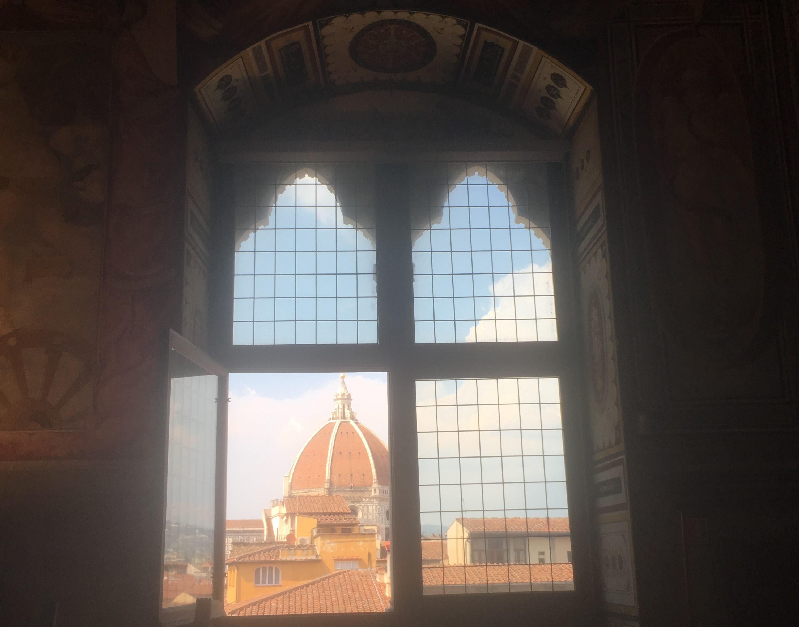

About

During May of 2018 I had the opportunity to study abroad in the beautiful city of Florence. My program was six weeks and was through the Engineering School here at Pitt! I took two classes one in Italian Art History and one in Engineering of the Renaissance. I learned a lot through this trip both from my classes as well as my day to day experiences. I was able to see many new cities, eat some delicious food and make friendships and memories I'll never forget! Check out my page to learn more about my trip!

Florence
Florence was the homebase for my study abroad trip. I lived in a two bedroom apartment with two other students. We had a 15 minute walk to class each morning. We took classes at CAPA but many of our classes included visits to museums around Florence. One sunday of the month all the museums were free, we saw Michaleango's the David, the Piti Palace, Boboli Gardens and even explored the Gucci Museum.

A view of the Duomo from inside the Uffizi Galleri
 Ponte Vecchio
Ponte Vecchio
A view of Florence from the Fiesol Hills
One of my favorite days was when we visited the Duomo and got to climb to the top. The view was amazing! We also walked to the top of the Piazzle Michaleango one day which is across the river. We explored Ponte Vecchio, many churches and some create panini and gelato shops along the way :)
 Overlooking Florence
Overlooking Florence
A Garden inside one of the museums
 The Duomo peeking out on the Streets of Florence
The Duomo peeking out on the Streets of Florence
Rome
Pantheon
Paladini Hill
Paladini Hill
On one of our weekends we took a trip to Rome! We spent the first day exploring the Colleseum, Palladini Hill and the Trevi Fountain. The architecture was absolutely amazing. It was interesting to see such famous architecture that I had learned about many times before. As we walked through Rome there were many street performers that livened it up. There was so much to see in Rome I would love to go back!
Outside the Colleseum
 Inside the Colleseum
Inside the Colleseum
Street Artist making bubbles
The second day in Rome we went to Vatican City. The Vatican musuem was extremly crowded but stunning. I was able to see the Sistine Chapel and it was breathtaking, you were not allowed to take pictures inside it but pictures would not do it justice. The trip to Rome was packed but it was amazing to see all the history up close.
Pisa & Lucca
During one of our first weekends we took a day trip to Pisa and Lucca. In Pisa there was not a whole lot to do. We walked from the train station to the leaning tower and saw some amazing views over the river. Seeing the Leaning tower was pretty sureal after seeing it so often photographed. The train tickets to and from Florence cost me a total of 20 Euros this day which amazed me how cheaply we could travel to such an iconic location.
The Leaning Tower!
The Church in Pisa
Street View of Pisa
We spent the second half of the day in Lucca. This city is much less touristy and was one of my favorite parts of the trip. Lucca is a walled city which made it very unique. It also had a clock tower with a garden atop which we climbed giving beautiful views.
Marching Band in Lucca
 View from the tower
View from the tower
 Garden Tower
Garden Tower
Cinque Terre
 One of my favorite views from the hike between the towns
One of my favorite views from the hike between the towns
Cinque Terre houses
 Looking up from my hike
Looking up from my hike
We traveled to Cinque Terre for a day trip but I wish I had spent a whole weekend there. Cinque Terre is made up of five small towns. We spent half the day hiking between the towns and viewing the beautiful coast line. It was a long and hot hike but the view was absolutely amazing!
 Bay in the first town we visited
Bay in the first town we visited
Beautiful water in Cinque Terre
Looking out at the view of Cinque Terre waters
We spent the second half of the day in Cinque Terre at the beach. This beach was a rock beach and was pretty crowded/touristy but it was very nice to cool off after the long hike we did for the first half of the day.
Amalfi Coast
Our trip to the Amalfi Coast was the last weekend of the entire trip. This was one of my favorite places in Italy. In the Amalfi Coast we went to multiple locations. We went to Positano which is a really famous beach in Amalfi. We also spent a day in Capri, a half day in Pompeii and half day in Naples. Capri was my favorite, we spent part of the day exploring the town and beach and then took a boat ride around the island and visited the blue grotto.
 Famous view of Positano
Famous view of Positano
 Pompeii and Mt. Vesuvius
Pompeii and Mt. Vesuvius
Naples Square
Our last location this weekend was Naples. My Grandmother's parents were from Italy and Naples was the closest that I got to the area that they immigrated from. Naples is famous for its pizza. I just got a regular marghertita pizza and I do have to say that the Pizza was amazing.
Another great Amalfi view
 Yachts in the Amalfi Coast
Yachts in the Amalfi Coast
Rock formations in Capri
Sienna and San Gimignano
Garden Square in Sienna
 View of Sienna
View of Sienna
The famous Square where the horse races take place
Sienna and San Gimingnano was another pair of places that we went to for a day. This day trip was a field trip with our class. We got a tour from a local in Sienna where she took us around the city and ended in the famous square in Sienna where the horse races normally take place. We then ate lunch and I had some of the best pasta and chocolate cake that I have ever eaten in my life.
 Views of Italian homes
Views of Italian homes
 Views of the Italian Countryside
Views of the Italian Countryside
 View from the top of San Gimignano
View from the top of San Gimignano
The second half of the day was in the beautiful town of San Gimingnano. This town has what is known as the world's best gelato. It certainly was some very, very good gelato. We also took a walk to a high point in the city and overlooked some great views of the countryside. There are a plethora of wonderful views in Italy.
Elba Island
One of our weekends a few of us took a day trip to the beautiful Elba Island. To get to the island we first took a train to the coast and then rode a ferry to the island. The ferry ride was about an hour but it was a very beautiful day and the ride was scenic. We were able to sit outside on the top deck of the ferry and enjoy the views.
View from Napolean's Residence
 Garden outside of Napeoleon's Residence
Garden outside of Napeoleon's Residence
 View of Napoleon's lighthouse
View of Napoleon's lighthouse
When we arrived at Elba we first toured Napoleon's residence, Elba is the island that Napoleon was exiled to. Not a bad place to be exiled to... After touring the grounds and seeing some really cool architecture and clothing from Napolean we went to the beach. The Elba beach was extremely peaceful, there were not many people.
View from a hike on the beach
The beautiful Elba waters
 Riding back on the Batman themed ferry
Riding back on the Batman themed ferry
Venice
 Venice "streets"
Venice "streets"
 Tourists taking Gondola rides
Tourists taking Gondola rides
 One of many bridges
One of many bridges
Venice, known for its gondola rides and bridges was really cool to see. Although they might not quite have as many bridges as Pittsburgh it was really impressive to see just how much of Venice was just water and bridges. We saw a glass blowing exhibit as Venice is famous for its glass.
 Venice Square
Venice Square
 Moving down the Venice water
Moving down the Venice water
Gondola Views
We also took a gondola ride in Venice. This really made the whole experience to Venice. The ride was extremely peaceful and we were able to see the ins and out of the city from a totally different perspective.